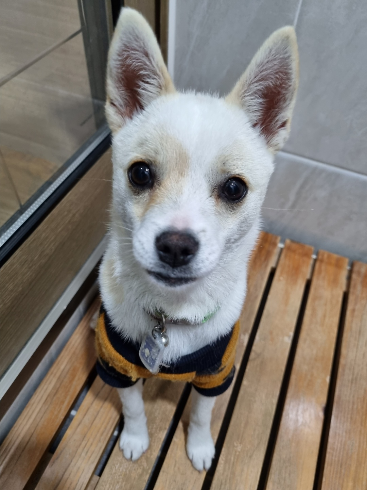

도리는 너무너무 귀엽습니다!

도리는 어렸을 땐 귀가 접혀있었습니다.
하지만 9월 10일경부터 귀가 반 정도 서기 시작하더니 10월 1일 정도에 귀가 완전 쫑긋이 섰습니다.
눈동자는 새까만 구슬 같습니다. 가끔 빤히 쳐다볼때 조금 부담스럽기도 합니다. 요즘 털갈이를 하는지 털이 겁나게 많이 빠집니다.
도리의 특기는 뱅글뱅글 돌기입니다. 기분이 좋을 때엔 우다다 뛰어다니기도 합니다.
물론 땅을 파는 것도 무척 좋아합니다.
궁둥이를 씰룩 쌜룩거리며 땅을 팔 때 무척 귀엽습니다.
도리는 계단을 잘 오르내립니다.
도리는 겁이 많기도 합니다. 비닐봉지를 보고 놀라기도 하고,
다른 사람을 무서워합니다. 하지만 잘 짖습니다.
도리는 나름 위협을 주지만 사람들은 도리를 그런 도리를 귀엽게 바라봅니다.
도리는 청각이 무척 뛰어납니다. 멀리서 가족의 차가 오면 소리를 듣고 알아챕니다. 그리고 제일 먼저 반겨줍니다.